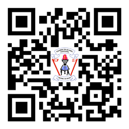

Book-keeping for Secondary Schools

viii
Student’s Book Form Two
Preface
This textbook, Book-keeping for Secondary Schools, is written specifically for Form
Two students in the United Republic of Tanzania. It is written in accordance with the
2023 Book-keeping Syllabus for Ordinary Secondary Education Form I-IV, issued by the Ministry of Education, Science and Technology (MoEST). It is a revised edition of
Book-keeping for Secondary Schools Student’s Book for Form Two that was published in 2023 in accordance with the 2016 Book-keeping Syllabus for Ordinary Secondary
Education Form I-IV, issued by the MoEST.
The book consists of four chapters, namely: Recording cash and banking transactions,
Correction of Book-keeping errors and the Trial balance, Reconciling bank account with
cash book balances and Budgeting and budgetary control. Each chapter contains text,
worked examples, activities, exercises and revision exercises. You are encouraged to do
all the activities, exercises, revision exercises as well as other assignments provided by
your teacher. Doing so will enable you to develop the intended competencies.
Additional learning resources are available in the TIE e-Library at https://ol.tie.go.tz or ol.tie.go.tz

Tanzania Institute of Education